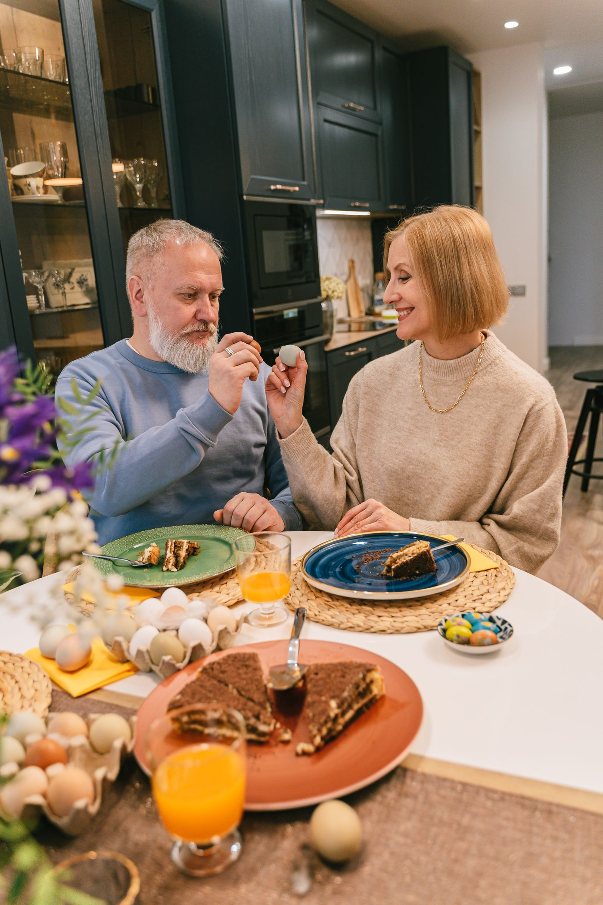

Control de salud
Controles periódicos y monitoreo de signos vitales para favorecer el bienestar y la calidad de vida.
Inicio · Servicios
Cuidamos la salud, el bienestar emocional y la vida diaria de cada residente, con un plan pensado a su medida.
Un equipo interdisciplinario que acompaña a cada residente de manera permanente.
Controles periódicos y monitoreo de signos vitales para favorecer el bienestar y la calidad de vida.
Atención permanente de personal capacitado: acompañamiento, medicación y respuesta inmediata.
Menús equilibrados y personalizados, adaptados a las necesidades de salud de cada residente.
Tratamientos individuales y grupales para la movilidad, la fuerza, el equilibrio y la autonomía.
Acompañamiento a residentes y familias, y abordaje de las necesidades sociofamiliares.
Contención, acompañamiento emocional y estimulación de las capacidades cognitivas y sociales.
Actividades que promueven la independencia y las habilidades para la vida diaria.
Propuestas recreativas, cognitivas y sociales que fomentan la participación y la creatividad.
Comidas caseras, variadas y nutritivas, elaboradas todos los días y según cada dieta.
Lavado y cuidado de la ropa personal y de cama, con higiene y comodidad.
Cuidado personal que suma al bienestar, la autoestima y la imagen de cada residente.
Protocolos permanentes para un entorno seguro, limpio y confortable.


[Cómo es el ingreso o el trámite]
[Estadía permanente / temporal / centro de día]
Coordinamos una visita sin compromiso para que la familia vea la residencia en persona.